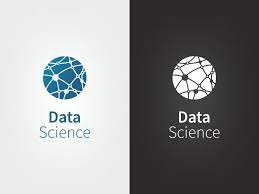

our free trail course
- 1.java
- 2.html
- 3.css
- 4.phython
- 5.java script
- 6.data science
java

why use java?
The name JAVA is a computer-based programming language that functions to develop computer-based applications.
It does not have a specific full form or neither an abbreviation. Hence, the 'Just Another Virtual Accelerator'
is a fictionalized complete version of JAVA and the name is put forward by the general public.
Tasks commonly performed with Java
A Java program may conation more than one class definition. We use the class keyword to define the class. The class is a
blueprint of a Java program. It contains information about user-defined methods, variables, and constants.
Every Java program has at least one class that contains the main() method.
Data Structure in java is defined as the collection of data pieces that offers an effective means of storing and
organising data in a computer. Linked List, Stack, Queue, and arrays are a few examples of java data structures.
html
what is HTML?
HTML (HyperText Markup Language) is the code that is used to structure a web page and its content. For example, content could be
structured within a set of paragraphs, a list of bulleted points, or using images and data tables.
HTML is not a programming language. It's a markup language. In fact, that is the technology's name: HyperText Markup Language.
There are three categories of HTML: transitional, strict, and frameset. Transitional is the most common type of HTML while the strict
type of HTML is meant to return rules to HTML and make it more reliable. Frameset allows Web developers to create a mosaic
of HTML documents and a menu system.
The first version of HTML was written by Tim Berners-Lee in 1993. Since then, there have been many different versions of HTML.
The most widely used version throughout the 2000's was HTML 4.01, which became an official standard in December 1999. Another version,
XHTML, was a rewrite of HTML as an XML language.
What are the 4 basic HTML tags?
Basic HTML Tags There is a range of HTML tags, they help you to design your web page. There are four required tags in HTML.
These are html, title, head and body.
CSS

What is CSS?
Cascading Style Sheets (CSS) is a simple mechanism for adding style (e.g., fonts, colors, spacing) to Web documents.
These pages contain information on how to learn and use CSS and on available software.
CSS is a rule-based language — you define the rules by specifying groups of styles that should be applied to particular
elements or groups of elements on your web page. In the above example, the CSS rule opens with a selector.
This selects the HTML element that we are going to style.
The CSS selectors module defines the patterns to select elements to which a set of CSS rules are then
applied along with their specificity . The CSS selectors module provides us with more than 60 selectors and
five combinators. Other modules provide additional pseudo-class selectors and pseudo-elements.
What is the basic syntax of CSS?
The selector points to the HTML element you want to style.
The declaration block contains one or more declarations separated by semicolons. Each declaration includes a
CSS property name and a value, separated by a colon.
What are the 2 main parts of a CSS syntax?
A CSS rule consists of two main parts: selector ('h1') and declaration ('color: red'). In HTML, element names
are case-insensitive so 'h1' works just as well as 'H1'. The declaration has two parts: property name ('color')
and property value ('red').
What is the structure of CSS?
How CSS is structured - Learn web development
At its most basic level, CSS consists of two components: Properties: These are human-readable
identifiers that indicate which stylistic features you want to modify.
For example, font-size , width , background-color . Values: Each property is assigned a value.
phython
why use phython?
Python is commonly used for developing websites and software, task automation, data analysis, and data visualisation.
Since it's relatively easy to learn, Python has been adopted by many non-programmers, such as accountants and
scientists, for a variety of everyday tasks, like organising finances.
Python is a dynamic, interpreted (bytecode-compiled) language. There are no type declarations of variables, parameters,
functions, or methods in source code. This makes the code short and flexible, and you lose the compile-time type
checking of the source code.
Python is a popular language for web and software development because you can create complex, multi-protocol
applications while maintaining concise, readable syntax. In fact, some of the most popular applications were built with Python
Python is a dynamic, interpreted (bytecode-compiled) language. There are no type declarations of variables, parameters,
functions, or methods in source code. This makes the code short and flexible, and you lose the compile-time type
checking of the source code.
Some examples of well-known companies that require Developers and Data Specialists to work with Python are Uber,
Goldman Sachs, PayPal, Netflix, and Google.
What can Python do?
java script

What is HTML used for?
Structuring web pages. With tags and elements, we can define the headings, paragraphs, and other contents of a web page.
JavaScript is a programming language that adds interactivity to your website. This happens in games, in the
behavior of responses when buttons are pressed or with data entry on forms; with dynamic styling; with animation, etc.
It is one of the most versatile languages for building rich and dynamic websites. JavaScript is typically used for
front-end web development, but it can also be used for backend development.
JavaScript was invented by Brendan Eich in 1995. It was developed for Netscape 2, and became the ECMA-262 standard in 1997.
After Netscape handed JavaScript over to ECMA, the Mozilla foundation continued to develop JavaScript for the Firefox browser.
In order to start coding in JavaScript the next step is to open up the actual place where we will write and execute the code
inside the Chrome browser. From the top menu, Go to: Menu, then Developer, and then click on JavaScript Console. You can also
use the shortcut for Mac, which is “option + command + J”.
data science
what is data science?
Data science is the study of data to extract meaningful insights for business. It is a multidisciplinary
approach that combines principles and practices from the fields of mathematics, statistics,
artificial intelligence, and computer engineering to analyze large amounts of data.
What is data science used for?
Data science is used to study data in four main ways:
1. Descriptive analysis
Descriptive analysis examines data to gain insights into what happened or what is happening in the data environment.
It is characterized by data visualizations such as pie charts, bar charts, line graphs, tables, or generated narratives.
For example, a flight booking service may record data like the number of tickets booked each day.
Descriptive analysis will reveal booking spikes, booking slumps, and high-performing months for this service.
2. Diagnostic analysis
Diagnostic analysis is a deep-dive or detailed data examination to understand why something happened.
It is characterized by techniques such as drill-down, data discovery, data mining, and correlations.
Multiple data operations and transformations may be performed on a given data set to discover
unique patterns in each of these techniques.For example, the flight service might drill down on a particularly
high-performing month to better understand the booking spike. This may lead to the discovery that many customers
visit a particular city to attend a monthly sporting event.
3. Predictive analysis
Predictive analysis uses historical data to make accurate forecasts about data patterns that may occur in the future.
It is characterized by techniques such as machine learning, forecasting, pattern matching, and predictive modeling.
In each of these techniques, computers are trained to reverse engineer causality connections in the data.For example,
the flight service team might use data science to predict flight booking patterns for the coming year at the start of each year.
The computer program or algorithm may look at past data and predict booking spikes for certain destinations in May.
Having anticipated their customer’s future travel requirements, the company could start targeted advertising from February.
4. Prescriptive analysis
Prescriptive analytics takes predictive data to the next level. It not only predicts what is likely to happen but also suggests
an optimum response to that outcome. It can analyze the potential implications of different choices and recommend the best course of action.
It uses graph analysis, simulation, complex event processing, neural networks, and recommendation engines from machine learning.